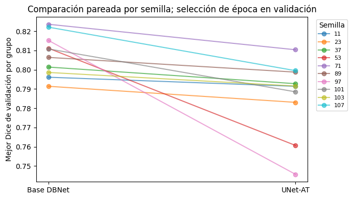
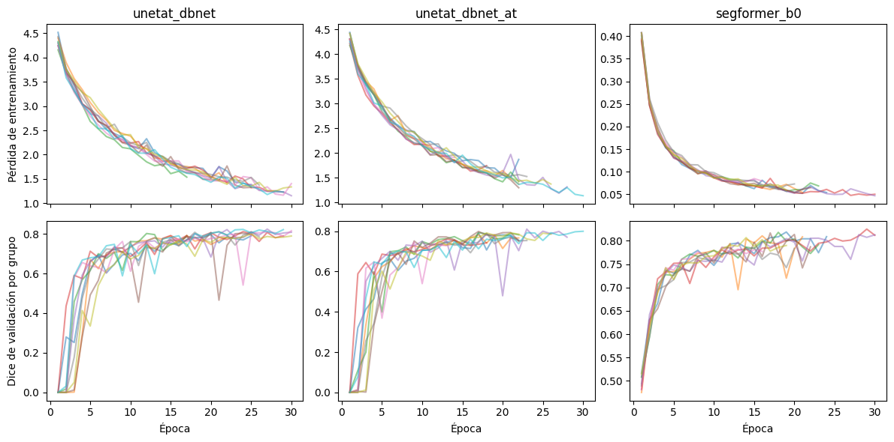

Resultados recibidos de Colab#
El paquete tesis_imo_e3_secuencia_v4-20261128T013803Z-1-001.zip contiene veinte corridas
completas del original y nueve de SegFormer corregido. Se verificaron configuración,
identidad, huella de cada mejor checkpoint, número de épocas y coincidencia entre la mejor
validación del historial y result.json. El nombre del archivo usa fecha UTC; este registro
se integra en la jornada local del 27 de noviembre.
Resultados de validación#
| modelo | n | esperadas | media | de | minimo | maximo | horas | estado | |
|---|---|---|---|---|---|---|---|---|---|
| 0 | segformer_b0 | 9 | 10 | 0.8090 | 0.0143 | 0.7851 | 0.8251 | 3.8553 | parcial |
| 1 | unetat_dbnet | 10 | 10 | 0.8077 | 0.0109 | 0.7914 | 0.8236 | 0.9884 | completo |
| 2 | unetat_dbnet_at | 10 | 10 | 0.7862 | 0.0192 | 0.7457 | 0.8104 | 4.5226 | completo |
Diferencia media pareada UNet-AT − base: -0.0215
Cada valor corresponde al mejor Dice por grupo en validación de una corrida, utilizado para seleccionar época. La dispersión es entre semillas; no es un intervalo de confianza. SegFormer aún tiene una semilla pendiente y su media puede cambiar. No se combinan estos valores con la tabla histórica de test del E2.
Comparación de los dos brazos#

UNet-AT obtiene media 0,7862 frente a 0,8077 de su base: diferencia −0,0215. El resultado no respalda una mejora global en esta validación. No se declara todavía refutada o confirmada la hipótesis específica del tercil pequeño, porque requiere evaluación por tamaño y la comparación final definida en el protocolo. Tampoco se atribuye la diferencia a C1 o C2 sin sus ablaciones.
Curvas de entrenamiento y validación#

Las pérdidas del original y de SegFormer tienen definiciones distintas; su escala no permite compararlos directamente. Las curvas terminan según el límite de épocas o la parada temprana de cada corrida. Las horas de la tabla suman los tiempos por época registrados, incluyendo validación; no equivalen a unidades facturadas por Colab.
Incorporación al tablero y cierre pendiente#
El tablero lee data/avance_colab.json, generado por experiments/integrar_avance_colab.py.
El artefacto representativo del original se selecciona por la mediana inferior de validación
entre las diez semillas (semilla 11). La demostración aplica el posproceso C2 completo;
la salida de probabilidad del núcleo por sí sola no es la máscara final del rótulo.
Faltan la última semilla de SegFormer, las nuevas corridas de los demás rivales y la revisión previa a la evaluación final. La inspección visual de test se mantiene separada del cierre estadístico. Los capítulos previos sobre limitaciones y tareas abiertas siguen aplicándose.